Analyze the old order system (Java · DDL) that Hanbit Delivery uses today into a code graph and a data schema, then design a new feature, “order rejection reasons”, as a proposal grounded in that graph. Claude Code on your computer does both the analysis and the design, so no OpenAI key is needed.
Designing from an old system#
So far you've designed by putting requirements into an empty project. Real work is usually changing or rebuilding a system that's already running. The most expensive mistake then is to design the new one without knowing the business rules the old system already enforces. Rules like “only orders waiting for acceptance can be rejected” or “closing the store rejects all waiting orders at once” aren't in any document. They're only in the code.
This chapter has two parts.
| Part | What it does | Result |
|---|---|---|
| 1. Analysis | Analyze the old code folder in Legacy › Code | Code graph (classes · methods · business rules · examples) · data schema (tables · column descriptions) |
| 2. Design from evidence | Put a new requirement into a proposal, and the INTENT skill searches the analysis graph and attaches evidence to each element | “Evidence n/m”, evidence tags · source code for each element |
The practice code#
Download hanbit-legacy.zip and unzip it (it unzips into a hanbit-legacy folder). It's the old order system Hanbit Delivery has used since 2016: Java 8 + JDBC, with the PostgreSQL schema delivery you connected in Chapter 11 as its DB.
| File | What it does |
|---|---|
schema/delivery.sql |
7 tables (customer · store · menu · orders · order_item · rider · delivery) |
order/OrderService.java |
Place · accept · reject · start cooking · cancel an order. The store's status changes (accept · reject · start cooking) all go through one changeStatus |
store/StoreService.java |
Open the store · close the store (rejects all waiting orders) |
menu/MenuService.java · delivery/DeliveryService.java · report/SettlementReport.java |
Menus · delivery · daily settlement |
Order status goes WAITING → ACCEPTED → COOKING → DELIVERING → DELIVERED, and can end as CANCELLED or REJECTED along the way. When an order is rejected, the reason isn't stored anywhere. That's what you'll fix in Part 2.
Hands-on 1 — Create the project#
- In the project bar on Home, click Switch project, type
hanbit_legacy_enin the New project field, and click Create. - For the code folder, click Choose folder…, choose the unzipped
hanbit-legacyfolder, and click Open project. (In the screenshots the folder is namedhanbit-legacy-en. The folder name doesn't matter.)
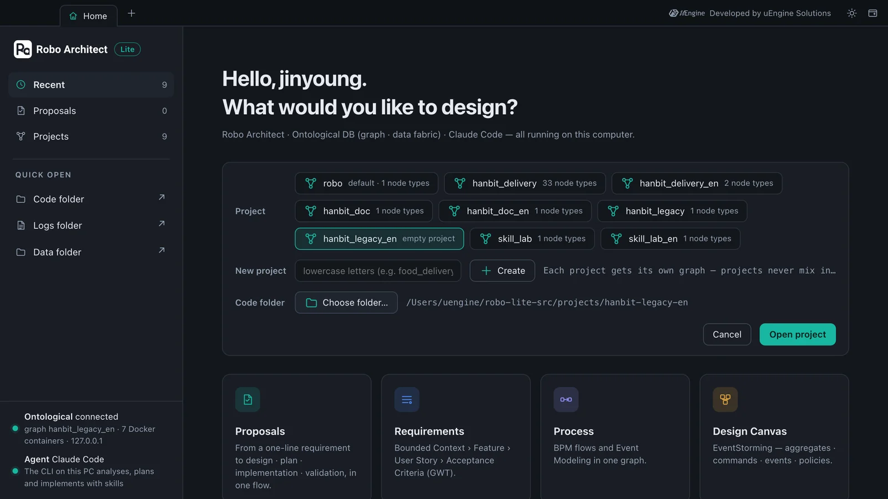
Hands-on 2 — Start the analysis#
- On Home, open the Legacy · Data Sources card. Code on the rail shows the code folder's file tree (click a file to preview it on the right).
- Click Start analysis at the bottom. If there's an earlier analysis, it asks whether to delete it and start over. Continue.
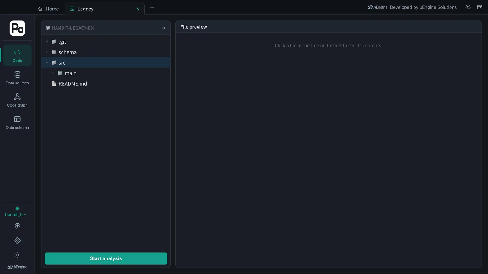
The analysis runs in seven stages: DDL parsing · Source loading · Project scan · Relationship linking · Analysis context setup · Code analysis · Post-processing. The first four parse the code and link classes · methods · tables with the calls · reads · writes between them. In Code analysis, the AI writes what each method does, its business rules and examples. The screen soon moves to the Code graph, and a progress window shows the stage and the number of nodes and relations. In this tutorial it took 141 seconds (about 2 minutes 20 seconds).
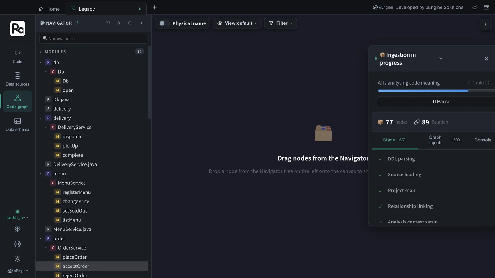
The AI is Claude Code on your computer
The analyzer's AI calls go through the app and are answered by Claude Code on your computer (claude -p). It uses the same login session as the proposal skills, so no OpenAI key is needed. In this setup, the analyzer's “semantic search” finds candidates with keyword search instead of vectors (embeddings). The evidence search in Part 2 uses this search.
Hands-on 3 — Read the code graph#
When the analysis finishes, the NAVIGATOR on the left becomes a package › class › method tree. In this tutorial there were 6 classes, 18 methods and 7 tables (32 columns), linked by 23 places where methods read or write tables and 46 calls.
- In the tree, expand order › OrderService. Double-click a method name to put it on the canvas. Put
placeOrder·acceptOrder·rejectOrder·startCooking·cancelOrder·changeStatuson it. The Calls lines show that accepting, rejecting and starting cooking all go throughchangeStatus(cancelling runs its own update, limited to the customer's own order). - Click
rejectOrderonce in the tree, and its details open on the right: Logical name “Store order rejection”, Role Command, then OVERVIEW, BUSINESS RULE, SOURCE CODE and CONNECT.
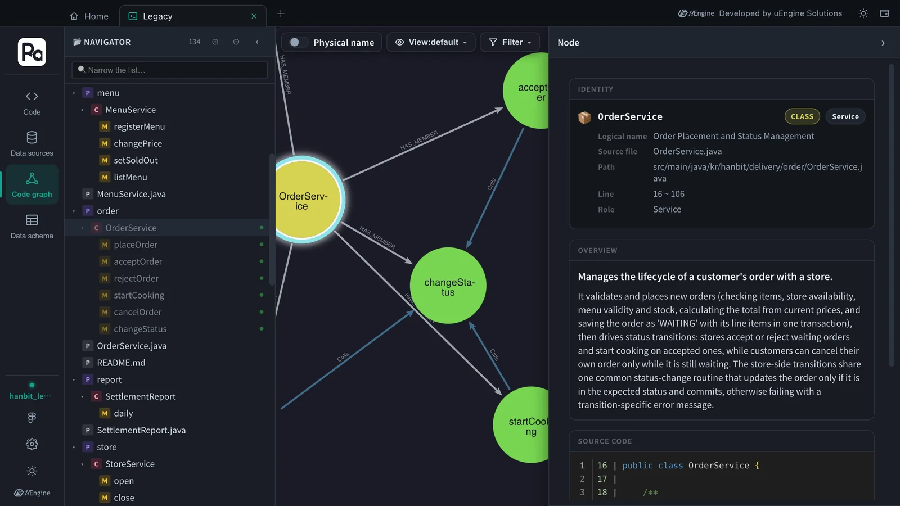
The BUSINESS RULE section is the core material of this chapter. Each rule the code actually enforces is written as one sentence with Examples (Given · When · Then).
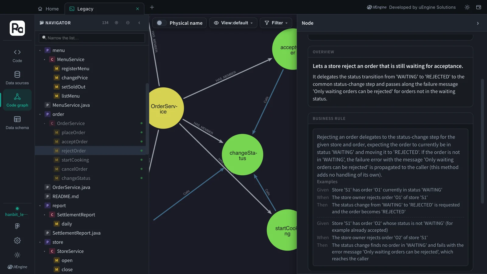
Open StoreService.close (logical name “Store closing with waiting order rejection”) and you'll find rules like “When a store is closed, every order of that store whose status is 'WAITING' is changed to status 'REJECTED'; orders in any other status are left unchanged.” and “After both updates, the changes are committed in one transaction and the number of orders rejected is returned; if the store has no 'WAITING' orders, 0 is returned.” These facts weren't in any document. They came out of the code.
Hands-on 4 — The data schema#
Click Data schema on the rail, and the left side lists the 7 tables read from the DDL (default › delivery). Double-click a table name to put it on the canvas. With Logical name turned on, tables show as “Orders” · “Store” · “Order item” · “Menu”, and columns show as the descriptions the code analysis wrote.
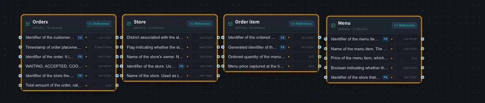
The data schema was empty when you only registered the data source in Chapter 11. Now the DDL and the code analysis have filled it. Column descriptions come from how the code uses the column, for example the order ID is “used in update conditions to select the specific order to change, such as for status transitions and cancellation”.
There's one analysis result per app
The analysis graph is one for the whole app, not one per project. If you analyze another code folder, the previous analysis is deleted and replaced. Also, the parts the AI writes (the number of rules, the sentences) differ a little on each run. Across runs of this tutorial there were 35, 52 and 53 business rules. Classes · methods · tables come from parsing and stay the same.
Hands-on 5 — Design a new feature from legacy evidence#
Now you use the analysis graph as evidence for the design. The new feature is “order rejection reasons”. The old system rejects orders but never records why.
- In the same
hanbit_legacy_enproject, open the Proposals card and click + New Proposal. - Type the following requirement and click Start AI Analysis.
Hanbit Delivery: When a store owner rejects an incoming order, they pick one reason (out of ingredients, closed for the day, or other). Customers see the rejected order's status together with that reason. When closing the store rejects all waiting orders at once, the reason must be recorded too.
The progress window shows a difference from Chapters 3 and 12. The INTENT skill searches the legacy graph for each business axis (Searching the legacy graph: …, “→ 11 legacy candidates · 3 rules found”), and opens the useful candidates down to their source code with Inspecting legacy node: …: rejectOrder · StoreService.close · changeStatus · the orders table. In this tutorial it took 161 seconds (about 2 minutes 40 seconds).
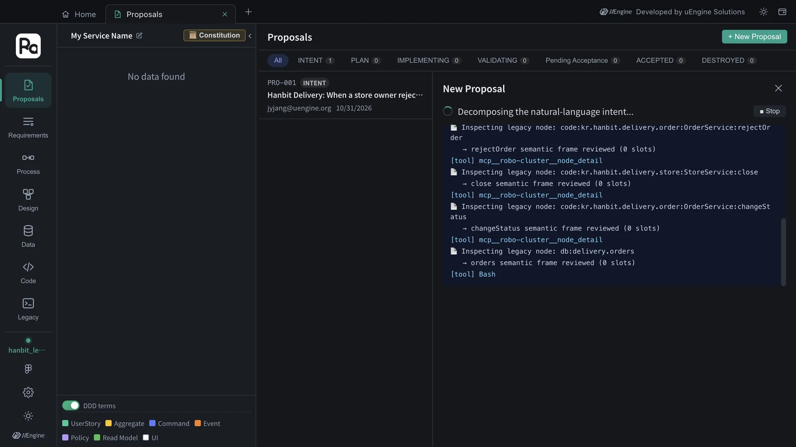
Click View Proposal, and the header sums up the evidence: Legacy evidence 15, Evidence 11/11. That means all 11 elements (2 bounded contexts · 3 features · 4 user stories · 2 processes) have evidence somewhere in the old code. The tag on each element (🔗 2) is that element's evidence count.
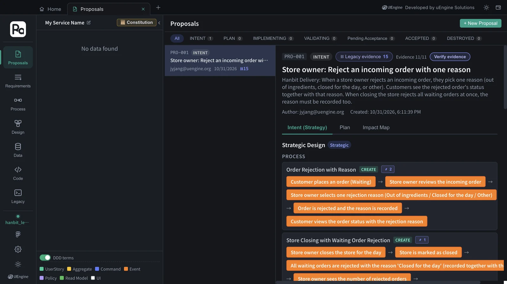
Click a tag, and that element's evidence opens. The process “Order Rejection with Reason” has two pieces of evidence.
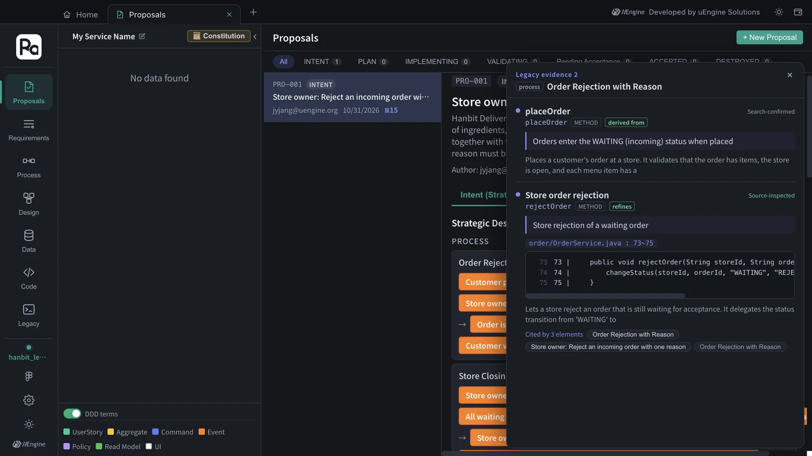
| Mark | Meaning |
|---|---|
| derived from · refines · reads · writes | How the new element relates to the old code: it comes from an old behavior / it changes an old behavior / it reads · writes that table |
| Source-inspected · Search-confirmed | INTENT opened the source code to check it / checked it only from search results |
| File : line · code | The source the evidence points to (order/OrderService.java : 73~75) |
| Cited by n elements | New elements that rely on the same old code. If you change that old code, they're all affected |
Evidence shows up in the acceptance criteria too. “Store owner: Reject an incoming order with one reason” has “Given an order that is no longer waiting (for example already accepted), When I try to reject it, Then the rejection is refused with 'Only waiting orders can be rejected' and neither the status nor any reason is recorded”. That's rejectOrder's rule, down to its exact message. The next criterion, an order of a different store is refused and left unchanged, comes from changeStatus only updating the given store's orders. In “Store owner: Waiting orders are rejected with reason 'Closed for the day' when the store closes”, the other order “keeps its status with no rejection reason”, and “the store closing and every rejection with its reason are recorded together”. Both follow the StoreService.close rules (only 'WAITING' orders, one transaction). And in “Store owner: Close the store for the day”, “I am told that 3 orders were rejected” (0 when there are none) comes from close returning the number of rejected orders. None of these were in the requirement sentence.
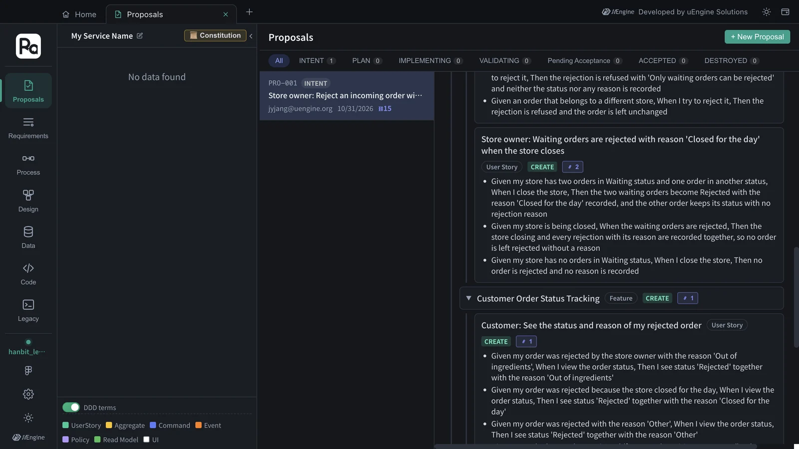
The Legacy evidence panel on the right of the Impact Map section groups the evidence by old code (in this tutorial, 8 cited · 7 searched). Hover over a card to see wires to the requirements that cite it. Click it to see the source and the elements citing it.
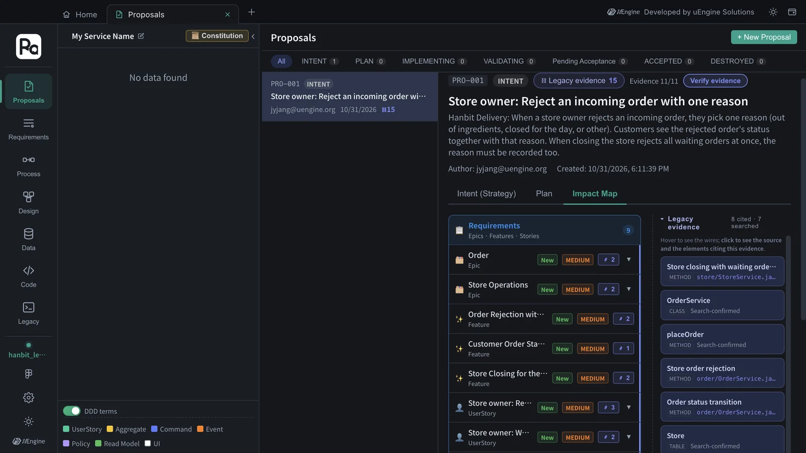
Like PRO-001 in Chapter 3, this proposal continues from Proceed to Plan → to the constitution, the plan and the implementation. The skills of the plan and implementation stages reuse the same evidence. They don't search again for source code they've already opened.
Verify evidence
Click Verify evidence in the header to expand the evidence verdicts and wires of every element at once. An element without evidence is marked “No legacy basis” (a newly introduced element with no counterpart in the legacy code). That's useful information too: it's where to ask why a new element is new.
What to check#
- The Legacy › Code graph tree has order › OrderService › rejectOrder, and its details show a business rule with examples.
- The data schema has 7 tables (delivery).
- The “order rejection reasons” proposal has “Evidence n/m” in its header, and clicking an element's tag shows the source code (file : line).
Quiz#
- Where do business rules and examples come from, documents or code?
- What does “Evidence 11/11” mean? If you get 0/11, what do you check first?
- What's the difference between “Source-inspected” and “Search-confirmed” evidence?
- The acceptance criterion “I am told that 3 orders were rejected” wasn't in the requirement sentence. Where did it come from?
Answers
- From code. In the analysis's “Code analysis” stage, the AI writes what each method does and its rules, and gives each rule a Given · When · Then example. That's why rules that were in no document (only waiting orders can be rejected, closing the store rejects all waiting orders) come out.
- All 11 new elements have evidence somewhere in the old code. If it's 0/11, first check that Legacy › Code graph has an analysis result. There's only one analysis per app, so if you analyzed another folder, that result is what gets used as evidence.
- Source-inspected evidence is something INTENT checked by opening the source code with a legacy node inspection. Search-confirmed evidence was checked only from search results (summaries).
- From the old system's behavior:
StoreService.closerejects the waiting orders and returns how many it rejected (0 if none). The design keeps something the store owner already gets today, so the new feature doesn't lose it.